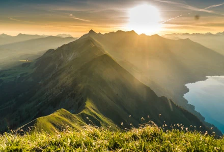

Mountains
Definition
There is no universally accepted definition of a mountain. Elevation, volume, relief, steepness, spacing and continuity have been used as criteria for defining a mountain. In the Oxford English Dictionary a mountain is defined as "a natural elevation of the earth surface rising more or less abruptly from the surrounding level and attaining an altitude which, relatively to the adjacent elevation, is impressive or notable."
Whether a landform is called a mountain may depend on local usage. Mount Scott outside Lawton, Oklahoma, US, is only 251 m (823 ft) from its base to its highest point. John Whittow's Dictionary of Physical Geography states "Some authorities regard eminences above 600 metres (1,969 ft) as mountains, those below being referred to as hills."
Superlatives
Heights of mountains are typically measured above sea level. Using this metric, Mount Everest is the highest mountain on Earth, at 8,848 metres (29,029 ft). There are at least 100 mountains with heights of over 7,200 metres (23,622 ft) above sea level, all of which are located in central and southern Asia. The highest mountains above sea level are generally not the highest above the surrounding terrain. There is no precise definition of surrounding base, but Denali, Mount Kilimanjaro and Nanga Parbat are possible candidates for the tallest mountain on land by this measure. The bases of mountain islands are below sea level, and given this consideration Mauna Kea (4,207 m (13,802 ft) above sea level) is the world's tallest mountain and volcano, rising about 10,203 m (33,474 ft) from the Pacific Ocean floor.
Mountains and humans
The highest known permanently tolerable altitude is at 5,950 metres (19,520 ft). At very high altitudes, the decreasing atmospheric pressure means that less oxygen is available for breathing, and there is less protection against solar radiation (UV). Above 8,000 metres (26,000 ft) elevation, there is not enough oxygen to support human life. This is sometimes referred to as the "death zone". The summits of Mount Everest and K2 are in the death zone.